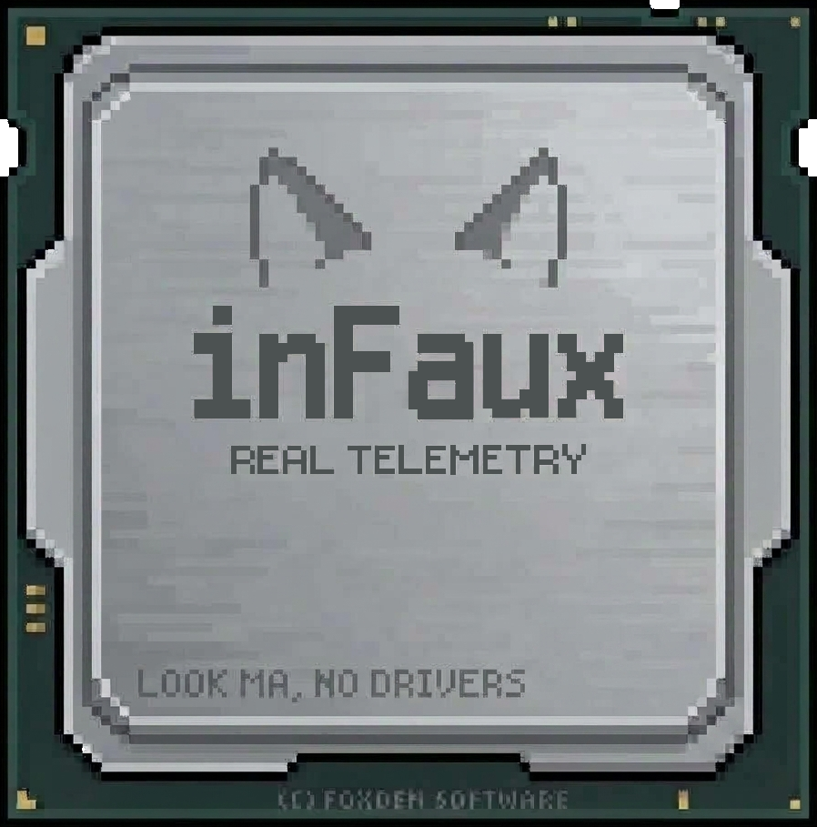
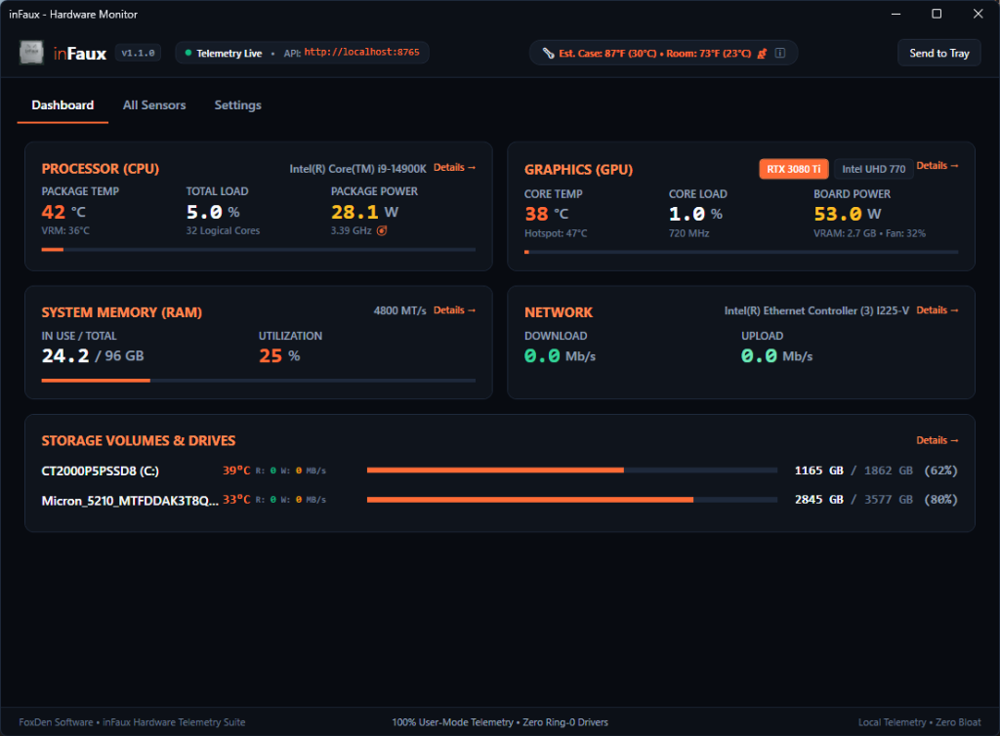

inFaux ("info") Real telemetry. Faux drivers.
The driverless, zero-install, zero-privilege hardware monitor and open telemetry server for Windows 10 & 11. Real-time Newtonian thermodynamic modeling, per-core silicon flux, and embedded WebSockets without a single UAC prompt.
irm https://raw.githubusercontent.com/TalviFox/inFaux/main/install.ps1 | iex
Built for Speed, Privacy, and Precision
No sketchy kernel drivers, no background telemetry trackers, and no UAC popups. Just clean, native hardware monitoring.
Zero Drivers, Zero Elevation
Runs as a standard user app (asInvoker). No sketchy kernel drivers, no UAC popups on startup, and zero risk of tripping anti-cheat or Windows Defender Core Isolation.
Smart Thermal Modeling
Instead of raw sensor jitter that sends your cooler fans into panic mode, inFaux uses real thermodynamic physics to model actual CPU package heat and per-core temps smoothly.
Local Telemetry API
A built-in local web server streams live hardware stats over JSON and WebSockets on port 8765. Connect Rainmeter, custom dashboards, or Home Assistant in seconds.
Stream Deck Plugin
Comes with a companion plugin with live, smooth dials for CPU, GPU, RAM, and Network. Tap any dial to cycle multi-GPU stats, with 1-click install right from Settings.
Works Inside VMs
Legacy monitors crash or show blank screens inside virtual machines because hypervisors block kernel drivers. Since inFaux runs 100% in user-mode, it just works.
Live System Tray Badge
Displays your live CPU or GPU temperature directly on your Windows taskbar tray icon with color-coded alerts and essentially zero CPU overhead.
Visual Elegance Powered by WPF
Hardware-accelerated dark mode dashboard with 60-second rolling sparklines and multi-GPU monitoring.

The Driverless Telemetry Advantage
Why modern Windows systems, games, and virtual environments demand user-mode telemetry.
| Capability / Architectural Standard | inFaux (FoxDen Software) | Traditional Tools (HWiNFO / HWMonitor) |
|---|---|---|
| Windows Security Privilege | asInvoker (Standard User) | Administrator (Requires Elevation) |
| Kernel Driver Dependency | Zero Drivers (100% User-Mode) | Ring-0 .sys Kernel Driver |
| UAC Prompts on Startup | 0 Prompts (Silent Task Startup) | Requires UAC Confirmation |
| Virtual Machine (VM) Compatibility | Full (Virtual Workload ΔT Model) | Fails / Driver Load Blocked |
| Anti-Cheat / Vanguard Compatibility | 100% Clean (Zero Driver Footprint) | Blocked / Heuristic Flags |
| Open Local Telemetry API | Built-in REST & WebSockets (:8765) | Proprietary / Shared Memory Only |
| Installation Footprint | Portable Single File or 1-Line IEX | Heavy Installer + Driver Registration |
Open Telemetry on Port 8765
Every instance of inFaux embeds a high-performance ASP.NET Core Kestrel web server. Stream live hardware metrics to custom web dashboards, Rainmeter, Elgato Stream Decks, or Home Assistant over standard JSON.
/api/v1/summary
Full JSON Hardware Snapshot
/api/v1/sensors
Flat Sensor Channels List
/api/v1/stream
60Hz WebSocket Real-time Feed
/api/v1/health
Daemon Health Status
{
"timestamp": "2026-09-27T14:55:00Z",
"cpu": {
"name": "AMD Ryzen 7 5825U",
"tempC": 36.0,
"loadPercent": 5.0,
"powerWatts": 16.0,
"cores": [
{ "id": 0, "clockMhz": 1840, "tempC": 36 },
{ "id": 1, "clockMhz": 1840, "tempC": 35 }
]
},
"chassis": {
"isVirtualMachine": true,
"additiveThermalDeltaC": 6.0,
"displayText": "VM Thermal Impact: +6°C ΔT"
},
"gpus": [
{
"name": "Integrated APU",
"tempC": 32.0,
"powerWatts": 1.5
}
]
}Fast Deployment. Zero Hassle.
Run standalone as a portable executable or install via PowerShell in seconds.
irm https://raw.githubusercontent.com/TalviFox/inFaux/main/install.ps1 | iex
Cryptographic SHA-256 Verification
Verify binary integrity locally before running. inFaux also includes an integrated runtime cryptographic audit feature:
Get-FileHash .\inFaux.exe -Algorithm SHA256
Everything You Need to Know
asInvoker) and contains zero kernel drivers or injection DLLs, making it completely invisible and safe for gaming.
irm https://raw.githubusercontent.com/TalviFox/inFaux/main/uninstall.ps1 | iex in PowerShell, or click Uninstall in Windows Installed Apps. Because inFaux leaves no kernel drivers or registry system services behind, uninstallation is instantaneous and 100% clean.